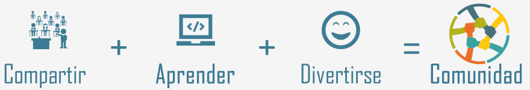
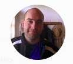

Nuestro objetivo

Nos inspira la idea de generar una comunidad y punto de encuentro de los desarrolladores PHP de nuestro país que por medio de reuniones regulares pueden conocerse, charlar, generar contactos, aprender y enseñar.
No importa si sos nuevo o tenes 20 años de experiencia. El C.V. dejalo para los de RRHH, acá trae el mate o la cerveza y pasa un buen rato hablando con gente del mismo palo.
¿Te interesa la propuesta? ¿Queres formar parte? Te esperamos!!!
No importa si sos nuevo o tenes 20 años de experiencia. El C.V. dejalo para los de RRHH, acá trae el mate o la cerveza y pasa un buen rato hablando con gente del mismo palo.
¿Te interesa la propuesta? ¿Queres formar parte? Te esperamos!!!
Próximo Meetup #3
Próximamente estaremos informando fecha y lugar.
Mientras tanto podes pre-inscribirte
Mientras tanto podes pre-inscribirte
Agenda Meetup #3
19:15
Vuelo ultraligero con FlightPHP.
"Alejandro Mohamad"
"Alejandro Mohamad"
20:45
Cierre y Networking.
"Andrés Lozada Mosto"
"Andrés Lozada Mosto"
Nos juntamos en...
¿Cómo puedo participar?
Viniendo a las reuniones
Dando una charla del tema que quieras y te sientas cómodo
Aportando ideas y sugerencias
Colaborando desde github
Siguiendonos e interactuando en Twitter
Dando una charla del tema que quieras y te sientas cómodo
Aportando ideas y sugerencias
Colaborando desde github
Siguiendonos e interactuando en Twitter
Meetups pasados
|
 |
Adrián Cattaneo El arte de la guerra aplicado al desarrollo. Divide al enemigo En esta introducción a Separation of Concerns veremos de qué se trata afrontar un gran problema con pequeñas soluciones que trabajan en conjunto. El concepto aplica a todos los lenguajes de programación pero se verán ejemplos en lo que respecta a desarrollo web. |
|
|
Alejandro Mahamad Hablemos de Frameworks |
 |
Federico Lozada Mosto Moderador |
 |
Andrés Lozada Mosto Moderador |